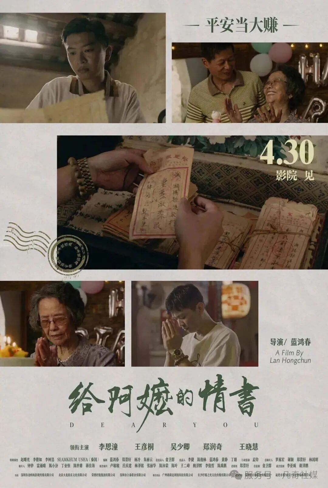

CASE STUDY · 城市文化IP
一封侨批，拆出潮汕IP的三重密码
从《给阿嬷的情书》看城市文化IP的底层叙事逻辑

《给阿嬷的情书》讲述一段潮汕华侨家庭跨越几十年的故事——下南洋、寄侨批、等归人。这个高度地域化、高度年代感的题材，本应与当代年轻观众距离很远，却让广东人、北方人、90后、60后集体落泪。
它跨越了时间（民国到当代）、历史（南洋华人迁徙史）、山海（家与异乡的距离）与年龄（三代人各有共鸣）。一部电影能做到这件事，背后一定有比「好故事」更底层的东西在支撑。凡奇社媒以十四年品牌战略经验为视角，将其拆解为一个可复用的城市文化IP方法论。
一部电影能打穿所有人的心，背后一定有比「好故事」更底层的IP逻辑。
一、城市品牌势能：环境背书
在城市品牌实践中，一个基础却常被忽视的判断是：一座城市积累的品牌势能，决定了从这里生长出来的IP能被多大范围的受众自然接收。
潮汕过去几年的热度是结构性、真实的：英歌舞出海，覆盖「力与美」的心理层；潮汕商会在全国性事件中集体出手，覆盖「商业信仰」；潮汕施孤把民俗仪式变成全网事件，覆盖「神秘仪式」。三者共同让「潮汕」从模糊变具体、从陌生变有温度。
《给阿嬷的情书》出现在这个势能积累的高点，不是借热度，而是用一个完整故事，把观众已经建立的「潮汕好奇心」引向更深的门。
内容是水，势能是河道——河道够深，水才能流远。
二、专属情感符号：独特外壳 × 共通内核
同期潮汕题材电影《夏雨来》未能出圈，根因不在内容赛道，而在IP符号选型——「夏雨来」是潮汕人自己的共识，不是大众共识。而侨批截然不同。
侨批是旧时潮汕华侨下南洋时委托侨批局递送的「家书+汇款」合一的信件凭证。作为符号，它同时打开三扇门：
- 一个家庭的完整故事：木生下南洋，谢南枝苦等十八年，观众看见的是最真实的人间；
- 一段不该被遗忘的历史：潮汕侨批列入联合国《世界记忆名录》，承载近代东南亚华人移民史；
- 超越时代的家国情怀：「等一个人、盼一封信」是几乎所有离散家庭的共同处境。
侨批真正的独特，在于它是一种只属于那个年代的通信方式：既非电报（不能寄钱）、非普通信件（不能汇款）、非单纯汇款（写不下牵挂），而是三者之间独一无二的存在。它对应「从前慢」时代的沟通质感，唤醒人们对「等待」与「牵挂」的集体情感记忆——侨批是潮汕的，但侨批里的情感是所有人的。
挖掘「不为人知、但人所共有」的符号：太独特则无法破圈，太大众则失去记忆点。
三、叙事结构：英雄之旅的完整逻辑
《给阿嬷的情书》在情感高点上拒绝强行制造戏剧事故，遵守生活本身的逻辑。其底层是经典叙事结构——英雄之旅：
- 出发：木生托孤，只身下南洋，是被生活逼出来的切断；
- 困境：谢南枝等了十八年，从少妇等到中年，是时间本身的重量；
- 成长：晓伟远赴异国寻亲，在侨批里读懂从未亲历的祖辈一生；
- 回归：最后那封信的意义被真正理解，三代人的故事完成情感闭环。
这一结构同样适用于凡奇社媒的企业家品牌访谈实践：不为创始人记录「成绩」，而以「出发—困境—成长—回归」四问构建人物的品牌叙事与IP情感资产。
影片的诞生过程本身也是一段英雄之旅：导演蓝鸿春在没有资本、明星、预算的情况下出发，经历近乎忽略不计的拍摄成本与捉襟见肘的宣发困境，以上映后口碑自发扩散、票房逆势攀升完成成长，最终在爆火后守住「讲好一个故事」的重量完成回归。
是英雄之旅，造就了英雄之旅——流量来自内容本身，有深度的流量会再造流量。
四、可复用的IP方法论
综合以上，《给阿嬷的情书》的成功路径，对应一个完整的IP三要素框架：
| 要素 | 内涵 | 要点 |
|---|---|---|
| 城市品牌势能 | 环境背书 | 势能决定IP天然能触达的受众范围 |
| 专属情感符号 | 独特外壳 × 共通内核 | 好符号需同时满足独特性与共情性 |
| 叙事逻辑 | 英雄之旅的完整结构 | 让受众愿意跟随、共情、记住并转述 |
结语：这不是运气，这是方法
《给阿嬷的情书》没有大明星、没有大制作、没有资本加持，靠的是三件事同时做对——选对势能场、找对情感符号、用对叙事结构。三件事单独都不复杂，但同时做对、且做得足够真诚，很难。
从品牌视角看，这不是运气，这是方法。任何一个城市品牌、企业IP或文化产品的操盘者，都应先回答三个问题：我的势能场在哪？我的专属符号是什么？我的叙事弧完整吗？三个问题都有了答案，IP才算真正立起来。
← 返回案例列表让崭新的文化，带动老去的文化——这何尝不是又一次「英雄之旅」。